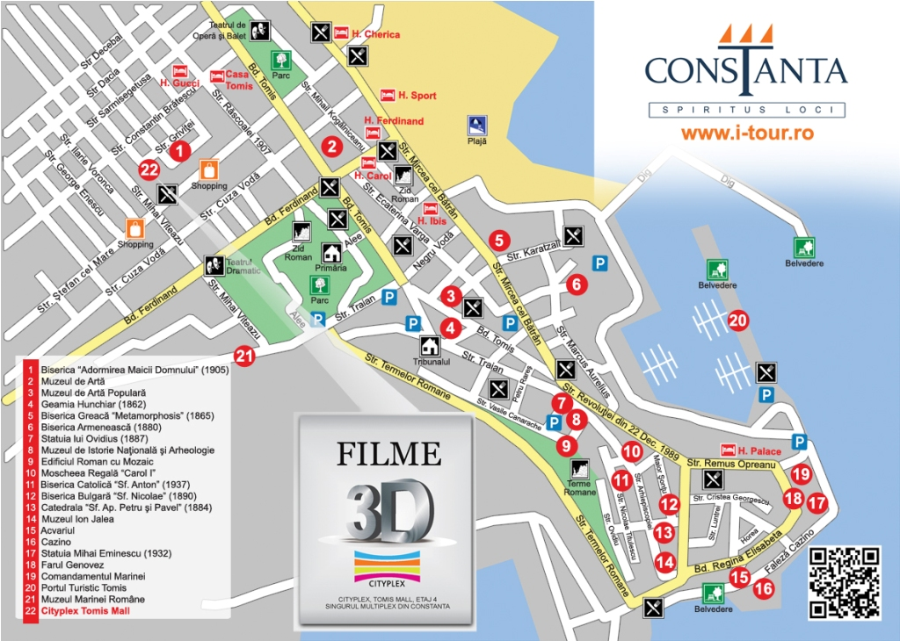
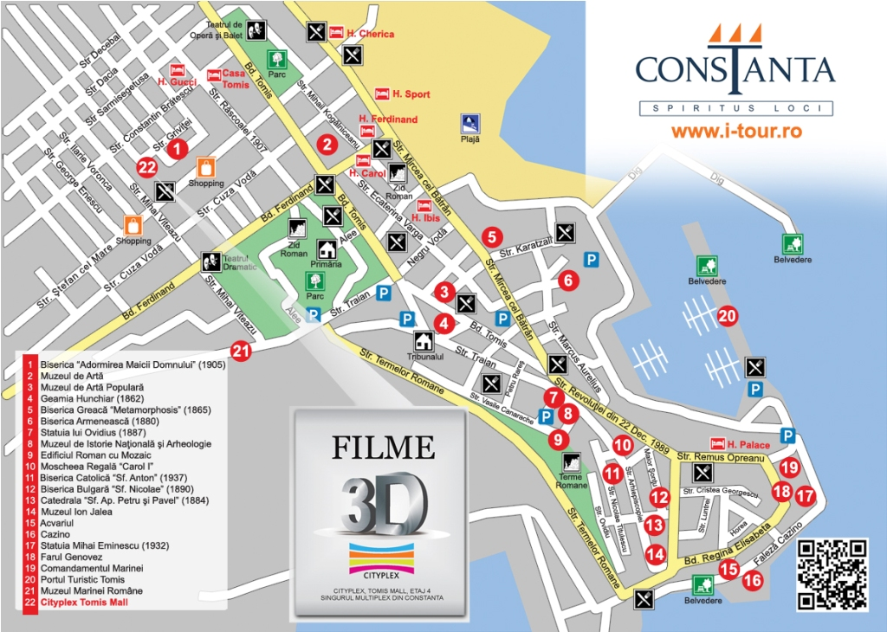

Explore Constanța
☰
Constanța a fost fondată sub numele de Tomis, un important port comercial.
Poetul roman Ovidiu a fost exilat aici, lăsând în urmă lucrări importante.
Orașul devine parte a Imperiului Roman și un port de mare importanță.
Vlad Țepeș are interacțiuni cu orașul, care devine parte din istoria sa.
Constanța devine parte a Imperiului Otoman până la Războiul de Independență.
Orașul devine un important centru turistic.
Cazinoul din Constanța este construit, devenind un simbol al orașului.
Orașul trece prin modificări semnificative după al Doilea Război Mondial.
Mai jos sunt câteva imagini care ilustrează frumusețea orașului:
 
